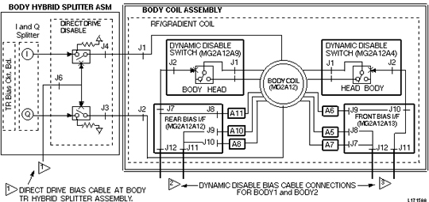
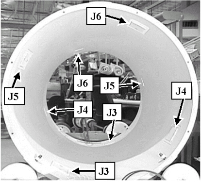

Operating Documentation
Direction 5440001-3, Rev# 6
Signa HDxt Service Methods
Module Version 1.0, Version Date 4/26/07
Operating Documentation |
This procedure isolates T/R Switch Circuitry (Head or Body) and Dynamic Disable Circuitry (Direct Drive and Dynamic Disable Switch Circuitry) with faulty PIN diodes (leaky diodes as tested when reverse biased). Illustration 1 shows the various bias connections that can be tested (connected vs. disconnected) to isolate a section of switches for Top Level Test (TLT).
Illustration 1: PIN DIODE TESTED DURING BODY PROCEDURE (1.5T)

Illustration 2 and Table 1 show how the dynamic disable switch boards (or in the case of the Twin system, diode boards) correspond to the coaxial drive bias lines.
Illustration 2: REAR VIEW INTO RF COIL SHOWING BOARD POSITIONS CORRESPONDING TO BIAS CABLES

Table 1: DYNAMIC DISABLE BIAS CONNECTIONS
| COIL SIDE | BIAS CABLES | DIODE BOARD POSITION |
| FRONT | J3/J5 | J3, J5 (FRONT) |
| FRONT | J4/J6 | J4, J6 (FRONT) |
| REAR | J3/J5 | J3, J5 (REAR) |
| REAR | J4/J6 | J4, J6 (REAR) |
TLT will be used to compare noise for the switch circuit tests with bias power connected and disconnected.
| NOTE: | It is important to understand that this test does not discuss or isolate a problem due to noise generated by the RF Amplifier (an unlikely and extremely rare occurrence). To isolate this potential problem, the RF Out line should be disconnected (must be a no RF scan). |